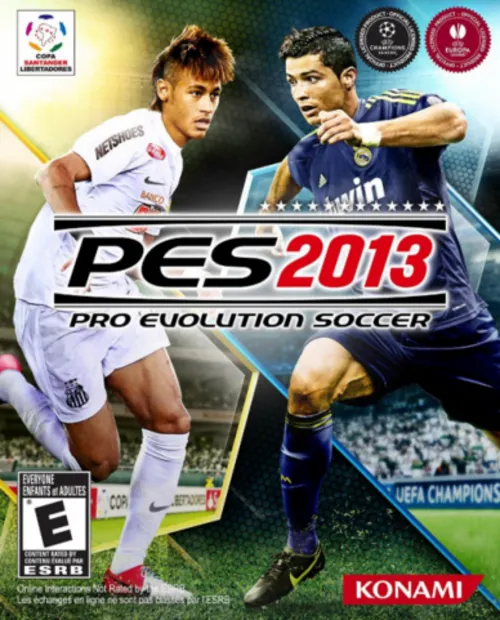
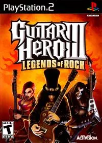
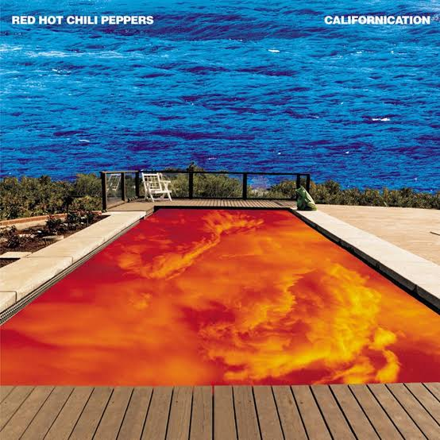
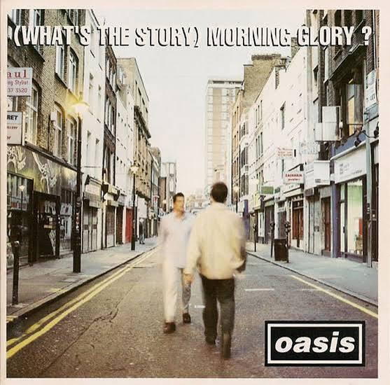
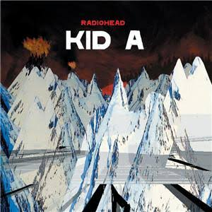
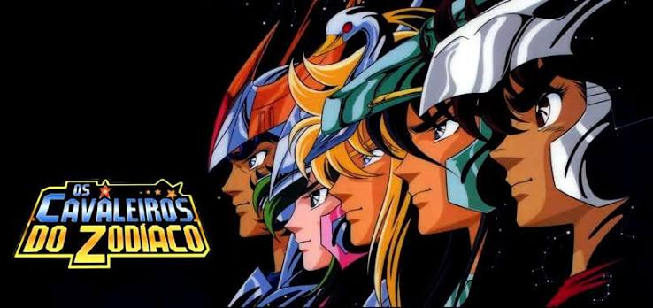
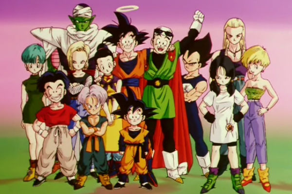
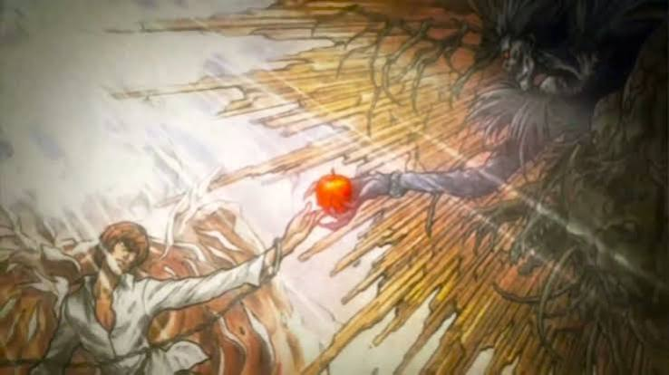

80 ° 90 ° 2000
Memorias que vão alem da imaginação.
esplore os limites da sua imaginação relembrando como foi bom sua infancia.
Relembre jogos que marcaram sua infancia.
Quem nao se lembra do classico Pes 2013
E quem nunca tirou um tempo para se sentir um roqueiro e destruir os botões no famoso Guitar Hero 3


A sessão que mais deixa lembranças
Bandas que dominaram cada decada
O que falar da banda Red Hot Chilli Peppers que foi um sucesso nos anos 80
Outra banda que não fica para trás é a banda Oasis com classicos que estourou na decada de 90
E por ultimo e não menos importante Radiohead que fez sucesso nos anos 2000 e marcou uma geração com seu iconico som "Creep"



A melhor parte chega agora
Animes uma parte onde qualquer um vira criança de novo, bora relembrar os animes que marcaram geração.
O que falar sobre Cavaleiro dos Zodiaco simplismente o pai dos animes de luta e fantasia, marcou uma geração nos anos 80 e marca até hoje.
Esse aqui dispensa comentarios, Dragon Ball Z simplismente o anime que mais revolucionou os animes, considerado por muitos o melhor anime de todos os tempos.
Talvez esse seja o menos conhecido, mas Death Note é um marco nos anos 2000, marcando gerações ate hoje, uma otima recomendação para inicar nesse meio de animes.



O fim?
NUNCA.
Talvez eu tenha trago algo da sua vida que você possa ter esquecido, se eu consegui isso ja fico feliz. As vezes relembrar é viver, siga a pagina para mais.